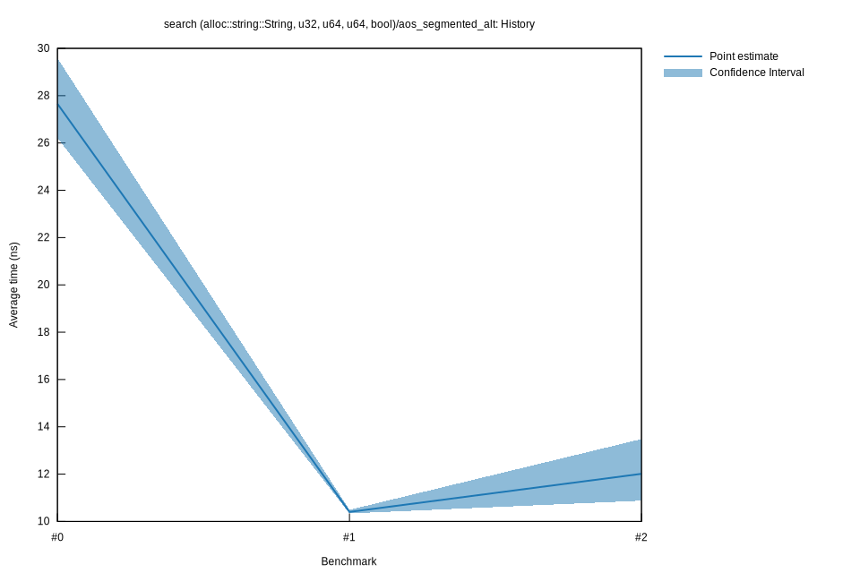

# 22023-02-24T22:45:51+01:00
|
Lower Bound |
Estimate |
Upper Bound |
| Value: |
10.88ns |
12.01ns |
13.48ns |
| Throughput: |
91.93Melem/s |
83.24Melem/s |
74.17Melem/s |
| Change in Value: |
+5.0884% |
+27.454% |
+55.760% |
| Change in Throughput: |
-4.8420% |
-21.540% |
-35.799% |
No change in performance detected.
# 12023-02-24T16:31:08+01:00
|
Lower Bound |
Estimate |
Upper Bound |
| Value: |
10.34ns |
10.40ns |
10.49ns |
| Throughput: |
96.74Melem/s |
96.14Melem/s |
95.33Melem/s |
| Change in Value: |
-68.403% |
-63.807% |
-60.035% |
| Change in Throughput: |
+216.49% |
+176.30% |
+150.22% |
No change in performance detected.
# 02023-02-24T15:59:36+01:00
|
Lower Bound |
Estimate |
Upper Bound |
| Value: |
26.21ns |
27.66ns |
29.58ns |
| Throughput: |
38.15Melem/s |
36.16Melem/s |
33.80Melem/s |